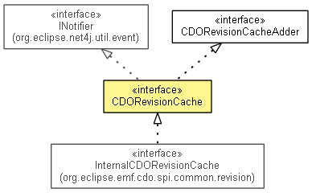

org.eclipse.emf.cdo.common.revision
Interface CDORevisionCache
- All Superinterfaces:
- CDORevisionCacheAdder, INotifier
- All Known Subinterfaces:
- InternalCDORevisionCache
- public interface CDORevisionCache
- extends CDORevisionCacheAdder, INotifier

Caches revisions and possibly evicts those that are no longer strongly
referenced when free memory runs low.
- Since:
- 4.0
- No Implement
- This interface is not intended to be implemented by clients.
- No Extend
- This interface is not intended to be extended by clients.
NOOP
static final CDORevisionCache NOOP
- Since:
- 3.0
getObjectType
EClass getObjectType(CDOID id)
getRevision
CDORevision getRevision(CDOID id,
CDOBranchPoint branchPoint)
- Since:
- 3.0
getRevisionByVersion
CDORevision getRevisionByVersion(CDOID id,
CDOBranchVersion branchVersion)
- Since:
- 3.0
getCurrentRevisions
List<CDORevision> getCurrentRevisions()
- Returns a list of
revisions that are current.
- Since:
- 3.0
Copyright (c) 2011, 2012 Eike Stepper (Berlin, Germany) and others.